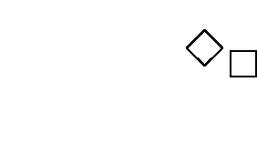
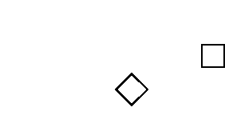

2 (a)
| (.707 + .707i)*C = -.707 + 2.121i | (.707 + .707i)*D = 2.828i |
| (.707 + .707i)*A = 1.414i | (.707 + .707i)*B = .707 + 2.121i |
|  |
2 (b)
| i*C = -2 + i | i*D = -2 + 2i |
| i*A = -1 + i | i*B = -1 + 2i |
2 (c)
| (-.707 + .707i)*C = -2.121 - .707i | (-.707 + .707i)*D = -2.828 |
| (-.707 + .707i)*A = -1.414 | (-.707 + .707i)*B = -2.121 + .707i |
|  |
Return to Exercises.